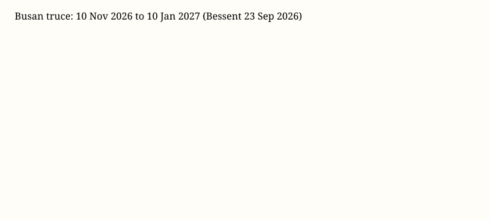

Washington · diplomacy and trade · 23–24 September 2026
Treasury said the Busan trade truce now runs to 10 January 2027 as Xi arrived for White House talks.

What is agreed across desks
Chinese President Xi Jinping arrived in the United States on 23 September 2026 for a multi-day visit. President Donald Trump greeted him at Joint Base Andrews in Maryland. Formal talks were scheduled at the White House on 24 September. Treasury Secretary Scott Bessent said the United States and China agreed to extend what Washington calls the Busan Agreement from a 10 November 2026 end date to 10 January 2027. Reuters, AP and other wires repeated that date pair. The extension is two calendar months. It is described as time to judge implementation and to discuss a larger package, not as the larger package itself. Bessent also said some Chinese commitments, including on rare-earth exports, had not been fully met. That sentence is a U.S. official claim about the other side’s performance.
Agenda lists that recur without a signed communiqué: tariffs and non-sensitive goods, rare-earth and critical-mineral supply, semiconductor export controls, a proposed AI dialogue, Taiwan arms sales, and China’s links with Iran. Those topics can be on a table without being decided. Low expectations for a reset are a consensus forecast, not a fact about Thursday afternoon.
What is only a quote
A tarmac greeting is protocol theater. It is not a tariff schedule. Language that the two countries should be partners, not rivals, is a slogan. Bessent’s remark that a bigger deal has been discussed is a negotiation statement in public. Chinese desires for a longer truce, if reported from briefers, remain unverified bargaining positions until written.
Mechanism a reader needs
A trade truce in this cycle is a mutual pause: each side holds off specified escalations in tariffs or export controls while talks continue. When a truce expires without replacement, the default is not automatically a new treaty; it is a return toward the pre-pause instruments unless both governments choose otherwise. Extending a date is therefore a real policy act and a limited one. It changes the calendar. It does not, by itself, rewrite chip rules or Taiwan policy. Rare-earth export licensing and advanced-node chip controls sit in different bureaucracies. Agriculture purchase volumes are measured in customs data with a lag. Mixing those files into one summit photo is how modern great-power meetings work; it is also how readers get the impression that one handshake settled four domains.
U.S. tariff law after recent Supreme Court action is not a single wall of rates. A two-month extension can matter to importers who price contracts on a quarterly clock. It cannot be scored as a completed grand bargain.
What the story is not
This is not evidence that Taiwan policy changed. It is not evidence that the Iran war will end because a summit occurred. It is not a finding that China has or has not met soybean or rare-earth pledges; those need later trade data. The checkable addition to the file is a new official end date and a documented arrival.

Source articles and scores
| Outlet | Headline | T | N | C |
|---|---|---|---|---|
| Reuters | US says China trade truce extended as Trump welcomes Xi | 95 | 0 | 98 |
| AP | Trump and Xi head into Washington summit | 94 | 0 | 96 |
| SCMP | Warm welcome, trade truce extended | 90 | +8 | 88 |
Image credits: Commons file pages in captions; chart is an original SVG from official dates.